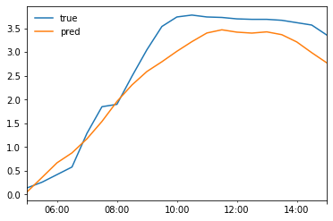
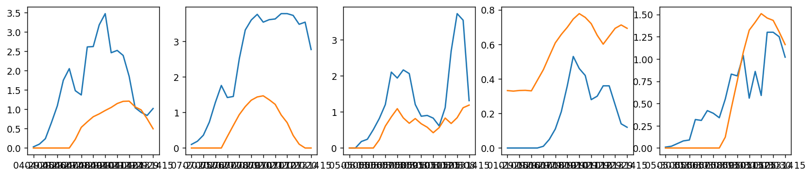

Charging with PV Forecast¶
Imports¶
#exports
import numpy as np
import pandas as pd
import os
import matplotlib.pyplot as plt
import seaborn as sns
import joblib
from moepy.lowess import quantile_model
from sklearn.pipeline import Pipeline
from sklearn.linear_model import LinearRegression, Lasso, Ridge
from sklearn.metrics import make_scorer, r2_score, mean_absolute_error, mean_squared_error
from sklearn.ensemble import RandomForestRegressor, GradientBoostingRegressor
from sklearn.model_selection import GroupKFold
from mlxtend.feature_selection import SequentialFeatureSelector as SFS
from skopt.plots import plot_objective
from skopt.space import Real, Categorical, Integer
from batopt import clean, discharge, utils, charge
import FEAutils as hlp
from ipypb import track
User inputs¶
raw_data_dir = '../data/raw'
intermediate_data_dir = '../data/intermediate'
cache_data_dir = '../data/nb-cache'
charge_opt_model_fp = '../models/charge_opt.sav'
Fitting forecast model¶
We'll first load the input data
#exports
def construct_df_charge_features(df, dt_rng=None):
if dt_rng is None:
dt_rng = pd.date_range(df.index.min(), df.index.max(), freq='30T')
df_features = pd.DataFrame(index=dt_rng)
# Adding temperature data
temp_loc_cols = df.columns[df.columns.str.contains('temp_location')]
df_features.loc[df.index, temp_loc_cols] = df[temp_loc_cols].copy()
df_features = df_features.ffill(limit=1)
# Adding solar irradiance data
solar_loc_cols = df.columns[df.columns.str.contains('solar_location')]
df_features.loc[df.index, solar_loc_cols] = df[solar_loc_cols].copy()
df_features = df_features.ffill(limit=1)
# Adding avg solar from previous week
df_features['pv_7d_lag'] = df['pv_power_mw'].rolling(48*7).mean().shift(48*7)
# Adding datetime features
dts = df_features.index
df_features['hour'] = dts.hour + dts.minute/60
df_features['doy'] = dts.dayofyear
# Removing some extraneous features - found not be particularly useful
cols = [c for c in df_features.columns if 'solar_location4' not in c and 'solar_location1' not in c]
df_features = df_features.filter(cols)
# Removing NaN values
df_features = df_features.dropna()
return df_features
def prepare_training_input_data(intermediate_data_dir, start_hour=5):
# Loading input data
df = clean.combine_training_datasets(intermediate_data_dir).interpolate(limit=1)
df_features = construct_df_charge_features(df)
# Filtering for overlapping feature and target data
dt_idx = pd.date_range(df_features.index.min(), df['pv_power_mw'].dropna().index.max()-pd.Timedelta(minutes=30), freq='30T')
s_pv = df.loc[dt_idx, 'pv_power_mw']
df_features = df_features.loc[dt_idx]
# Filtering for evening datetimes
charging_datetimes = charge.extract_charging_datetimes(df_features, start_hour=start_hour)
X = df_features.loc[charging_datetimes]
y = s_pv.loc[charging_datetimes]
return X, y
X, y = prepare_training_input_data(intermediate_data_dir)
X.head()
| temp_location1 | temp_location2 | temp_location3 | temp_location4 | temp_location5 | temp_location6 | solar_location2 | solar_location3 | solar_location5 | solar_location6 | pv_7d_lag | weekend | dow | hour | doy | |
|---|---|---|---|---|---|---|---|---|---|---|---|---|---|---|---|
| 2017-11-17 05:00:00+00:00 | 3.79 | 4.28 | 2.97 | 1.25 | 9.3 | 9.77 | 0 | 0 | 0 | 0 | 0.334792 | 0 | 4 | 5 | 321 |
| 2017-11-17 05:30:00+00:00 | 3.555 | 3.95 | 2.82 | 0.98 | 9.31 | 9.755 | 0 | 0 | 0 | 0 | 0.334792 | 0 | 4 | 5.5 | 321 |
| 2017-11-17 06:00:00+00:00 | 3.32 | 3.62 | 2.67 | 0.71 | 9.32 | 9.74 | 0 | 0 | 0 | 0 | 0.334792 | 0 | 4 | 6 | 321 |
| 2017-11-17 06:30:00+00:00 | 3.255 | 3.535 | 2.675 | 0.78 | 9.34 | 9.74 | 0.155 | 0.075 | 0.12 | 0.255 | 0.334792 | 0 | 4 | 6.5 | 321 |
| 2017-11-17 07:00:00+00:00 | 3.19 | 3.45 | 2.68 | 0.85 | 9.36 | 9.74 | 0.31 | 0.15 | 0.24 | 0.51 | 0.334732 | 0 | 4 | 7 | 321 |
We'll create a quick baseline PV forecast
df_pred_LR = clean.generate_kfold_preds(X.values, y.values, RandomForestRegressor(), index=X.index)
df_pred_LR.head()
| pred | true | |
|---|---|---|
| 2017-11-17 05:00:00+00:00 | 0 | 0 |
| 2017-11-17 05:30:00+00:00 | 0 | 0 |
| 2017-11-17 06:00:00+00:00 | 0 | 0 |
| 2017-11-17 06:30:00+00:00 | 0 | 0 |
| 2017-11-17 07:00:00+00:00 | 0 | 0 |
Analysing the predictions
plt.scatter(df_pred.true, df_pred.pred, s=0.1)
plt.xlabel('Observation')
plt.ylabel('Prediction')
Text(0, 0.5, 'Prediction')

We'll also visualise what the prediction looks like for randomly selected days
#exports
def plot_random_day(df_pred, ax=None):
"""
View predicted and observed PV profiles
"""
if ax is None:
ax = plt.gca()
random_day_idx = pd.to_datetime(np.random.choice(df_pred.index.date))
df_random_day = df_pred[df_pred.index.date==random_day_idx]
df_random_day['true'].plot(ax=ax)
df_random_day['pred'].plot(ax=ax)
return ax
plot_random_day(df_pred)
plt.legend(frameon=False)
<matplotlib.legend.Legend at 0x2c0e0225730>

We'll then carry out the second-stage for our model, the solar peak flattening
random_solar_profile = discharge.sample_random_day(df_pred.pred).pipe(charge.extract_solar_profile)
adj_random_solar_profile = discharge.flatten_peak(random_solar_profile)
charge_profile = charge.construct_charge_profile(random_solar_profile, adj_random_solar_profile)
plt.plot(charge_profile)
[<matplotlib.lines.Line2D at 0x1227af520>]
Predicting charge based on PV forecast¶
Now we will begin developing a unified approach for predicting PV and then optimising the battery charge schedule.
We will also group by week. This should make the problem a bit harder, and help encourage the final model to generalise to lengthy unseen periods.
#exports
def generate_kfold_preds_weeks(X, y, model, groups, kfold_kwargs, index=None):
"""
Generate kfold preds, grouping by week
"""
group_kfold = GroupKFold(**kfold_kwargs)
df_pred = pd.DataFrame(columns=['pred', 'true'], index=np.arange(X.shape[0]))
for train_index, test_index in group_kfold.split(X, y, groups):
X_train, X_test = X[train_index], X[test_index]
y_train, y_test = y[train_index], y[test_index]
model.fit(X_train, y_train)
df_pred.loc[test_index, 'true'] = y_test
df_pred.loc[test_index, 'pred'] = model.predict(X_test)
df_pred.sort_index()
if index is not None:
assert len(index) == df_pred.shape[0], 'The passed index must be the same length as X and y'
df_pred.index = index
return df_pred
def generate_kfold_charge_preds(X, y, model, groups, kfold_kwargs={'n_splits': 5}):
"""
Fit the PV forecasting model and calculate the optimal charge profile for predictions.
"""
df_pred = generate_kfold_preds_weeks(X.values, y.values, model, groups, kfold_kwargs=kfold_kwargs, index=X.index)
charge_pred = charge.construct_charge_s(df_pred.pred)
charge_pred = charge.post_pred_charge_proc_func(charge_pred)
return pd.DataFrame({'charge_pred': charge_pred,
'pv_actual': df_pred.true,
'pv_pred': df_pred.pred})
def predict_charge(X, model):
"""
Given a fitted PV forecast model and feature array X, get the optimal charge profile.
"""
pv_pred = pd.Series(model.predict(X), index=X.index)
charge_pred = charge.construct_charge_s(pv_pred)
charge_pred = charge.post_pred_charge_proc_func(charge_pred)
return pd.Series(charge_pred, index=X.index)
We'll also create a helper function for our test/train split based on time
#exports
def get_train_test_arr(arr, start_of_test_period):
train_arr = arr[:pd.to_datetime(start_of_test_period, utc=True)]
test_arr = arr[pd.to_datetime(start_of_test_period, utc=True):]
return train_arr, test_arr
def get_train_test_Xy(X, y, start_of_test_period):
x_train, x_test = get_train_test_arr(X, start_of_test_period)
y_train, y_test = get_train_test_arr(y, start_of_test_period)
return x_train, x_test, y_train, y_test
start_of_test_period = '2019-02-04'
X_train, X_test, y_train, y_test = get_train_test_Xy(X, y, start_of_test_period)
Now let's try executing this unified approach using k-fold CV, for 3 default models on the training data:
models = {
'std_linear': LinearRegression(),
'lasso': Lasso(),
'ridge': Ridge(),
'boosted': GradientBoostingRegressor(),
'random_forest': RandomForestRegressor(),
}
#Define the week groups
week_groups = X_train.index.year + X_train.index.isocalendar().week/52
for key in models:
charge_pred_df = generate_kfold_charge_preds(X_train, y_train, models[key], week_groups)
score = charge.score_charging(charge_pred_df.charge_pred, charge_pred_df.pv_actual)
pv_mse = np.mean(np.square(charge_pred_df.pv_actual - charge_pred_df.pv_pred))
solar_exploit_pct = 100*charge.prop_max_solar(charge_pred_df.charge_pred, charge_pred_df.pv_actual)
print("{}: PV MSE: {:.2f}, score: {:.2f}, solar exploit: {:.2f}%".format(key, pv_mse, score, solar_exploit_pct))
std_linear: PV MSE: 0.35, score: 0.77, solar exploit: 94.86%
lasso: PV MSE: 0.39, score: 0.76, solar exploit: 93.87%
ridge: PV MSE: 0.35, score: 0.77, solar exploit: 94.86%
boosted: PV MSE: 0.36, score: 0.77, solar exploit: 94.48%
random_forest: PV MSE: 0.35, score: 0.76, solar exploit: 94.35%
Interestingly, there is little difference between the models in terms of solar exploit, even though there are some differences in the MSE of the PV forecasts. For our previous attempt at the charging task, the linear model was much worse than the boosted model and RF in terms of solar exploit. This suggests that a weak (or under-fitted) estimator of solar PV actually performs quite well when it comes to
best_model = RandomForestRegressor()
best_model.fit(X_train, y_train)
preds = predict_charge(X_test, best_model)
100*charge.prop_max_solar(preds, y_test)
95.64718850989254
pd.Series(dict(zip(X_test.columns, best_model.feature_importances_))).sort_values(ascending=False)
solar_location2 0.656734
solar_location6 0.057420
solar_location5 0.048603
hour 0.036628
pv_7d_lag 0.031805
solar_location3 0.031244
doy 0.030441
temp_location4 0.019506
temp_location6 0.018710
temp_location5 0.016729
temp_location1 0.014523
temp_location3 0.013219
dow 0.012169
temp_location2 0.011155
weekend 0.001112
dtype: float64
Running the above analysis it seems like solar_locations 1 and 4 do not contribute much at all to the regression models: both are over an order of magnitude smaller than the others. Best to remove these when processing the data (for the moment this is charge.py
features = [c for c in X_train.columns if 'solar_location4' not in c and 'solar_location1' not in c]
X_train_reduced, X_test_reduced = X_train.filter(features), X_test.filter(features)
charge_pred_df = generate_kfold_charge_preds(X_train_reduced, y_train, LinearRegression(), week_groups)
score = charge.score_charging(charge_pred_df.charge_pred, charge_pred_df.pv_actual)
pv_mse = np.mean(np.square(charge_pred_df.pv_actual - charge_pred_df.pv_pred))
solar_exploit_pct = 100*charge.prop_max_solar(charge_pred_df.charge_pred, charge_pred_df.pv_actual)
print("PV MSE: {:.2f}, score: {:.2f}, solar exploit: {:.2f}%".format(pv_mse, score, solar_exploit_pct))
Tuned RF model¶
rf_params = {
'criterion': 'mae',
'min_samples_leaf': 46,
'min_samples_split': 2,
'n_estimators': 150
}
best_model = RandomForestRegressor(**rf_params)
best_model.fit(X_train, y_train)
preds = predict_charge(X_test, best_model)
100*charge.prop_max_solar(preds, y_test)
def construct_solar_exploit_calculator(solar_profile, charging_datetimes=None, scorer=False):
if charging_datetimes is None:
charging_datetimes = charge.extract_charging_datetimes(solar_profile)
def calc_solar_exploitation(y, y_pred):
# Checking evening datetimes
if hasattr(y_pred, 'index') == True:
charging_datetimes = charge.extract_charging_datetimes(y_pred)
assert y_pred.shape[0] == solar_profile.loc[charging_datetimes].shape[0], f'The prediction series must be the same length as the number of charging datetimes in the main dataframe, {y_pred.shape[0]} {s_demand.loc[evening_datetimes].shape[0]}'
charge_pred = charge.construct_charge_s(y_pred)
charge_pred = charge.post_pred_charge_proc_func(charge_pred)
exploitation_pct = 100 * charge.prop_max_solar(charge_pred, solar_profile.loc[charging_datetimes])
return exploitation_pct
if scorer == True:
return make_scorer(calc_solar_exploitation)
else:
return calc_solar_exploitation
Feature Selection¶
It seems like overfitting could be a substantial issue for charging. Trying some feature selection:
model = Lasso(alpha=0.5)
model.fit(X_train, y_train)
coefs_df = pd.DataFrame({'feature': X_train.columns,
'coefs': model.coef_})
features = coefs_df[abs(coefs_df.coefs) > 0].feature
features
9 solar_location5
15 solar_location2_rolling
16 solar_location3_rolling
17 solar_location5_rolling
18 solar_location6_rolling
22 temp_location4_rolling
Name: feature, dtype: object
# features = [f for f in X_train.columns if 'temp' not in f]
def prop_max_solar_df(charge_pred_df):
return charge.prop_max_solar(charge_pred_df.charge_pred, charge_pred_df.pv_actual)
X_train_reduced = X_train.filter(features)
models = {
'std_linear': LinearRegression(),
'lasso': Lasso(),
'boosted': GradientBoostingRegressor(),
'random_forest': RandomForestRegressor(),
}
# Define the week groups
week_groups = X_train.index.year + X_train.index.isocalendar().week/52
for key in models:
charge_pred_df = generate_kfold_charge_preds(X_train, y_train, models[key], week_groups)
score = charge.score_charging(charge_pred_df.charge_pred, charge_pred_df.pv_actual)
pv_mse = np.mean(np.square(charge_pred_df.pv_actual - charge_pred_df.pv_pred))
solar_exploit_pct = 100*charge_pred_df.groupby(charge_pred_df.index.date).apply(prop_max_solar_df)
print("{}: PV MSE: {:.2f}, score: {:.2f}, solar exploit: {:.2f}%, std. solar exploit: {:.2f}".format(key,
pv_mse,
score,
solar_exploit_pct.mean(),
solar_exploit_pct.std()))
std_linear: PV MSE: 0.34, score: 0.77, solar exploit: 94.98%, std. solar exploit: 7.88
lasso: PV MSE: 0.37, score: 0.76, solar exploit: 94.52%, std. solar exploit: 8.43
boosted: PV MSE: 0.35, score: 0.77, solar exploit: 94.85%, std. solar exploit: 8.26
random_forest: PV MSE: 0.35, score: 0.76, solar exploit: 94.74%, std. solar exploit: 8.35
model = LinearRegression()
charge_pred_df = generate_kfold_charge_preds(X_train, y_train, model, week_groups)
fig, axs = plt.subplots(1,5, figsize=(15,3), dpi=125)
for i in range(5):
random_day = pd.to_datetime(np.random.choice(charge_pred_df.index.date))
random_df = charge_pred_df[charge_pred_df.index.date == random_day]
random_df['pv_actual'].plot(ax=axs[i])
random_df['charge_pred'].plot(ax=axs[i])

#exports
def predict_charge(X, model):
"""
Given a fitted PV forecast model and feature array X, get the optimal charge profile.
"""
pv_pred = pd.Series(model.predict(X), index=X.index)
charge_pred = charge.construct_charge_s(pv_pred)
charge_pred = charge.post_pred_charge_proc_func(charge_pred)
return pd.Series(charge_pred, index=X.index)
model = LinearRegression()
model.fit(X_train, y_train)
pv_pred = model.predict(X_test)
charge_pred = predict_charge(X_test, model)
charge_pred_df = pd.DataFrame({'charge_pred': charge_pred,
'pv_pred': pv_pred,
'pv_actual': y_test})
solar_exploit_pct = 100*charge_pred_df.groupby(charge_pred_df.index.date).apply(prop_max_solar_df)
print("Held out solar exploit: {:.2f}%".format(solar_exploit_pct.mean(), ))
print("Held out solar exploit (std): {:.2f}".format(solar_exploit_pct.std(), ))
Held out solar exploit: 93.98%
Held out solar exploit (std): 8.19
N=8
fig, axs = plt.subplots(1,N, figsize=(15,3), dpi=125, sharey=True)
for i in range(N):
random_day = pd.to_datetime(np.random.choice(charge_pred_df.index.date, replace=True))
random_df = charge_pred_df[charge_pred_df.index.date == random_day]
axs[i].plot(random_df.pv_actual, c='b', alpha=1)
axs[i].plot(random_df.pv_pred, c='b', linestyle='--', alpha=0.2)
axs[i].plot(random_df.charge_pred, c='g')
axs[i].axhline(2.5, c='r', linestyle=':')
axs[i].set_xticks([])

## X, y = prepare_training_input_data(intermediate_data_dir)
start_of_test_period = '2019-02-04'
X_train, X_test = get_train_test(X, start_of_test_period)
y_train, y_test = get_train_test(y, start_of_test_period)
charging_datetimes = charge.extract_charging_datetimes(X_train)
solar_exploit_scorer = construct_solar_exploit_calculator(solar_profile=y,
charging_datetimes=charging_datetimes,
scorer=True)
groups = charging_datetimes.date
pipeline = Pipeline([
('pandas_RF', utils.PandasRandomForestRegressor())
])
search_spaces = {
'pandas_RF__min_samples_leaf': Integer(1, 20, 'uniform'),
'pandas_RF__criterion': Categorical(['mse', 'mae']),
'pandas_RF__n_estimators': Integer(10, 150, 'uniform'),
'pandas_RF__max_features': Categorical(['auto', 'sqrt']),
'pandas_RF__max_depth': Integer(5, 200, 'uniform'),
'pandas_RF__min_samples_split': Integer(2, 10, 'uniform'),
'pandas_RF__min_samples_leaf': Integer(1, 4, 'uniform'),
'pandas_RF__bootstrap': Categorical([True, False])
}
opt = utils.BayesSearchCV(
pipeline,
search_spaces,
n_iter=10,
verbose=1,
cv=4,
scoring=solar_exploit_scorer,
n_jobs=-1
)
fit_BayesSearchCV = False
if fit_BayesSearchCV == True:
opt.fit(X_train, y_train, groups=groups)
print(f'validation score: {opt.best_score_}')
print(f'held out score: {opt.score(X_test, y_test)}')
print(f'best params: {opt.best_params_}')
_ = plot_objective(opt.optimizer_results_[0])
plt.show()
#exports
def fit_and_save_pv_model(X, y, pv_model_fp, model_class=LinearRegression, **model_params):
model = model_class(**model_params)
model.fit(X, y)
with open(pv_model_fp, 'wb') as fp:
joblib.dump(model, fp)
return
#exports
#exports
def prepare_test_feature_data(raw_data_dir, intermediate_data_dir, test_start_date=None, test_end_date=None, start_time='08:00', end_time='23:59'):
# Loading input data
df = clean.combine_training_datasets(intermediate_data_dir).interpolate(limit=1)
df_features = construct_df_charge_features(df)
# Loading default index (latest submission)
if test_end_date is None or test_start_date is None:
index = discharge.load_latest_submission_template(raw_data_dir).index
else:
index = df_features[test_start_date:test_end_date].index
# Filtering feature data on submission datetimes
df_features = df_features.loc[index].between_time(start_time, end_time)
return df_features
def optimise_test_charge_profile(raw_data_dir, intermediate_data_dir, pv_model_fp, test_start_date=None, test_end_date=None, start_time='08:00', end_time='23:59'):
df_features = prepare_test_feature_data(raw_data_dir, intermediate_data_dir, test_start_date=test_start_date, test_end_date=test_end_date, start_time=start_time, end_time=end_time)
charging_datetimes = charge.extract_charging_datetimes(df_features)
X_test = df_features.loc[charging_datetimes]
model = discharge.load_trained_model(pv_model_fp)
charge_profile = predict_charge(X_test, model)
s_charge_profile = pd.Series(charge_profile, index=charging_datetimes)
s_charge_profile = s_charge_profile.reindex(df_features.index).fillna(0)
s_charge_profile = charge.post_pred_charge_proc_func(s_charge_profile)
assert charge.charge_is_valid(s_charge_profile), "Charging profile is invalid"
return s_charge_profile
pv_model_fp = '../models/pv_model.sav'
s_charge_profile = optimise_test_charge_profile(raw_data_dir, intermediate_data_dir, pv_model_fp)
s_charge_profile.plot()
---------------------------------------------------------------------------
NameError Traceback (most recent call last)
<ipython-input-6-8db658a0274e> in <module>
1 pv_model_fp = '../models/pv_model.sav'
----> 2 s_charge_profile = optimise_test_charge_profile(intermediate_data_dir, pv_model_fp)
3
4 s_charge_profile.plot()
NameError: name 'intermediate_data_dir' is not defined
Finally we'll export the relevant code to our batopt module